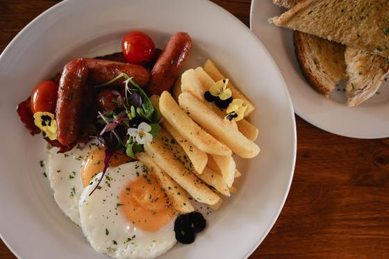

Photo and video brief for The Acreage
What we need photographed and filmed, and the shapes it has to work in.
We have the place. We need it in use.
The Acreage already has beautiful professional photographs of the venue, the plated food and the drinks, almost all of them without people. What social media, advertising and the new website need now is the same setting with life in it: people at the tables, food arriving, light on the lawn. Everything from this day will be used on Facebook, Instagram, TikTok, in paid ads and on the website.
Elegant, soft and natural.
Warm natural light, an airy feel, and people caught mid-moment rather than posed. The images below are from The Acreage's own library and show the light and mood to aim for.


Thirty frames.
The format column shows which shapes each shot has to work in. Shots marked "Also for ads" are the ones the advertising depends on, and "Video too" means ten seconds of that same scene filmed upright is worth as much as the still.
Shoot every frame upright as well as horizontal: vertical is what Stories, Reels, TikTok and most ads use, and a vertical frame can be cropped to a feed post, while a horizontal one cannot become a good Story. Five frames are children or dogs shot from a distance or from behind, so nobody is recognisable in them and they need no release.
What each format actually looks like.
Every platform crops to its own shape. Below are the ones we use, drawn true to each other, each one filled with a photograph from The Acreage's existing library.

1080 × 1080 1080 × 1920
1080 × 1920 1920 × 1080
1920 × 1080 1920 × 1005
1920 × 1005Drawn at 14 percent of real size.
Why we ask for everything upright
Landscape to vertical. The white box is all that survives in a Story, a Reel or a vertical ad. On a wide lawn shot that throws away exactly what made it worth taking.
Vertical to portrait or square. An upright frame trims neatly to 4:5 for the feed and 1:1 for a carousel, so one shot covers three places.
Where the words have to go

- On a vertical frame, the top 14 percent and bottom 35 percent are covered by the interface, and about 6 percent down each side.
- The photograph itself can fill the frame. It is the headline and the price that have to live inside the dashed area, which is why we ask for space around the subject.
- Shooting a little wider than feels right is the single most useful habit. A crop can always be tightened later; it cannot be loosened.
Formats, video and delivery.
Photographs
- Both orientations for every key frame, with room around the subject so it can be cropped. The shapes are drawn above.
- Leave clear space at the top of some frames, for a headline or price.
- Full-resolution JPEG, colour-edited to the soft, natural look above, no watermark.
Video clips
- Filmed upright, 4K or 1080p at 25 or 30 frames a second, for every frame marked "Video too".
- Hold each shot for ten seconds and keep it steady.
- Sound on. Real sound from the day, no music added.
- Anything marked "Video too" in the list, plus a slow walk through the restaurant and one of the lapa.
Delivery
- Into The Acreage's shared Google Drive folder, never over WhatsApp, which shrinks the files.
- Twenty selects within 48 hours, so the best frames can go on the website and social media straight away.
- The full edited set within five working days, with the raw video clips.
Usage rights, in writing
- The Acreage may use every image and clip without time limit on social media, in paid advertising, on the website and in print.
- Agreed with the photographer before the day, with the rate.
- The photographer may use the work in their own portfolio.
Guests who have said yes.
Real guests may not want to be photographed, and anyone who appears in an advert has to agree to it. The simplest route is to invite a few tables of friends, regulars or team families for the morning and for sunset, and to ask everyone recognisable to sign a short release. Silhouettes and shots from behind need no release.
Four tables to invite
- A couple, for breakfast on the lawn.
- A family with young children, happy for them to be photographed from behind or at a distance.
- Three or four friends, for brunch or sunset drinks.
- A guest with a well-behaved dog.
A release, in plain words
Suggested wording for a one-line sign-off sheet with name, signature and date:
"I agree that The Acreage may use photographs and video of me taken on 19 September 2026 on its website, social media and advertising."
The checklist for The Acreage.
- Photographer booked, with the rate and usage rights confirmed in writing
- This brief sent to the photographer
- Four tables invited, and the release sheet printed
- Fresh flowers and linen napkins for the tables
- The kitchen told which dishes to plate
- The jumping castle or play equipment on site, if it is normally hired in
- Team in clean uniform, and the chef and bar staff happy to be photographed
- Lawn cut, and bins, cables and stacked furniture cleared from view
- A shared Google Drive folder created for the files
- One person named to look after the photographer on the day
- Forecast checked on Thursday 17 September